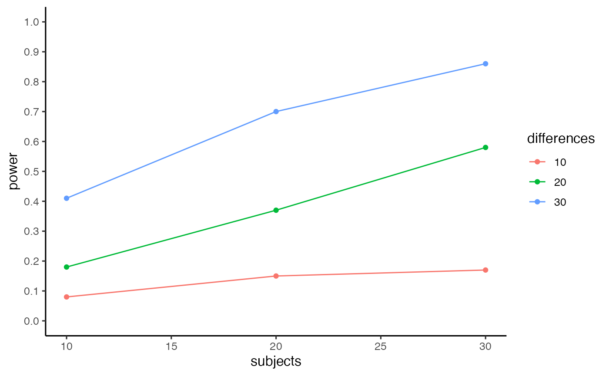

pc_power_table.RdEstimate power for proportion conflict effect using monte-carlo simulation, return table and plot
pc_power_table(subjects, differences, base_conflict, mc_c_nmst, mc_nc_nmst, mnc_c_nmst, mnc_nc_nmst, num_sims = 100, alpha = 0.05)
| subjects | A vector for the numbers of subjects across simulated experiments |
|---|---|
| differences | A vector for the sizes of differences between conflict effects |
| base_conflict | A number setting the size of the conflict effect for the mostly no conflict items. |
| mc_c_nmst | A vector containing the parameters for an ex-gaussian distribution, c(n, mu, sigma, tau), where n is the number of trials. |
| mc_nc_nmst | A vector containing the parameters for an ex-gaussian distribution, c(n, mu, sigma, tau), where n is the number of trials. |
| mnc_c_nmst | A vector containing the parameters for an ex-gaussian distribution, c(n, mu, sigma, tau), where n is the number of trials. |
| mnc_nc_nmst | A vector containing the parameters for an ex-gaussian distribution, c(n, mu, sigma, tau), where n is the number of trials. |
| num_sims | A number, simulations to run |
| alpha | A number, alpha criterion |
A list, $power_table contains a table with power estimates as a function of number of subjects and mean differences, $power_curve contains a graph (using ggplot2) showing power as a function of subjects and mean differences
This function is an extension to pc_power_fast, that allows multiple estimates of power for a vector specifying numbers of subjects and mean differences.
This function uses monte-carlo simulation to determine statistical power associated for detecting a conflict effect, and includes paramaters for number of subjects in the experiment, number of trials in each condition (conflict vs. no-conflict), and paramaters (mu,sigma,tau) for each reaction time distribution.
For every simulated experiment, a one sample t-test (two-tailed) is computed, and the p-value is saved. Power is the proportion of simulated experiments that return p-values less than the defined alpha criterion.
test <- pc_power_table(subjects = c(10,20,30), differences = c(10,20,30), base_conflict = 100, mc_c_nmst = c(50,705,80.7,157.5), mc_nc_nmst = c(50,625,68.6,166.3), mnc_c_nmst = c(50,725,80.7,157.5), mnc_nc_nmst = c(50,625,68.6,166.3), num_sims = 100, alpha = .05) test$power_table#> subjects differences power #> 1 10 10 0.08 #> 2 20 10 0.15 #> 3 30 10 0.17 #> 4 10 20 0.18 #> 5 20 20 0.37 #> 6 30 20 0.58 #> 7 10 30 0.41 #> 8 20 30 0.70 #> 9 30 30 0.86test$power_curve